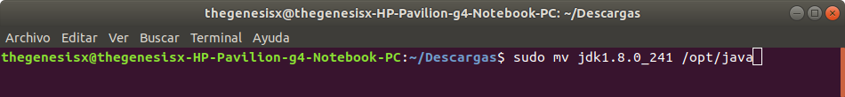
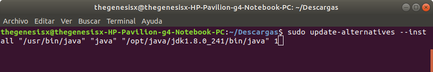
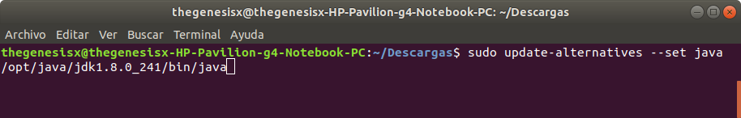
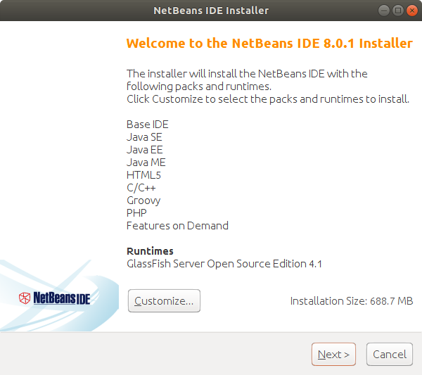
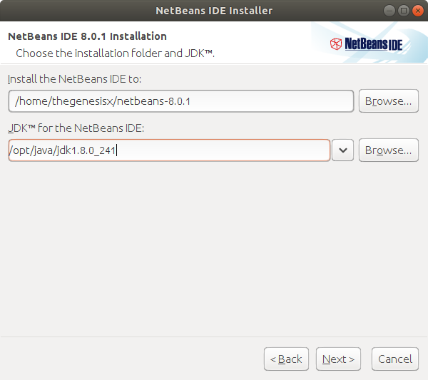
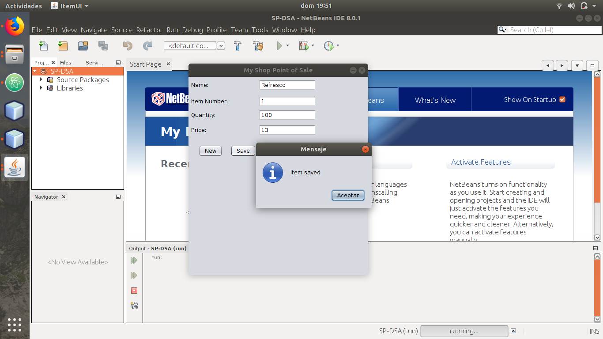
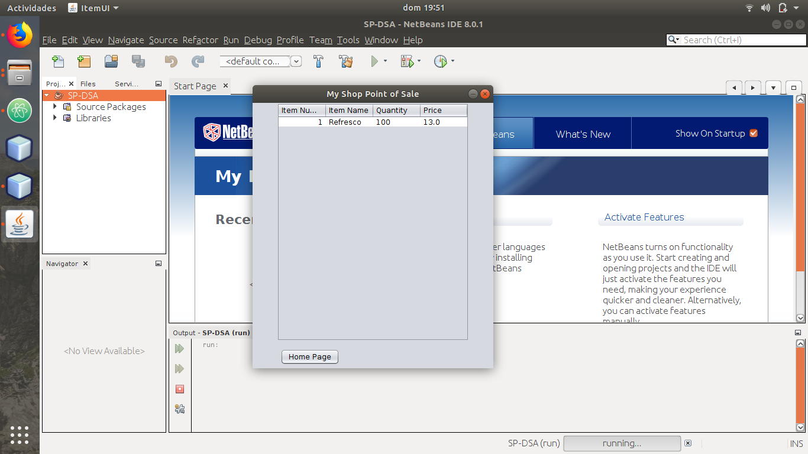

Instrucciones
- Instalar Java y desarrollar un punto de venta básico que funcione en Windows y Linux.
Requerimientos
- Conexión a internet.
- Java JDK (Java Development Kit)
- Algún IDE (Integrated Development Environment) para Java. En este caso utilizaremos NetBeans.
Comencemos
- Para descargar Java en Ubuntu, haremos uso de la línea de comandos, que se puede abrir más fácilmente mediante el comando Ctrl+alt+t. Una vez abierta, ingresaremos los siguientes comandos:
- Ahora accederemos a la página de Java por medio del siguiente LINK para poder descargar la paquetería completa.
- A continuación procederemos a configurar Java por medio de los siguientes comandos:
- Hecho esto, procederemos a instalar NetBeans. Accederemos a la página de descarga mediante el siguiente LINK y descargaremos la versión que dice "ALL"
- Procederemos con la instalación por medio de los siguientes comandos.
- Finalmente nos dirigiremos al siguiente LINK para descargar el punto de venta.
- Una vez descargado el programa, ejecutaremos NetBeans y correremos el programa.
Comenzaremos por instalar Java. Primero lo haremos en Linux Ubuntu.
Esto servirá para eliminar la versión de Java por defecto que viene en Linux,
y que no nos será de utilidad.
Aceptamos la licencia y descargamos la versión que nos corresponda. En este caso sería Linux x64 (.tar.gz).
Nos dirigimos a la carpeta en donde se descargó el archivo, y procedemos a descomprimirlo.

Generamos una carpeta a donde designaremos Java.

Movemos los archivos a dicha carpeta.


Hacemos a Java un sistema predeterminado.
Nos dirigimos a la carpeta en donde se descargó, con el primer comando hacemos
que el archivo sea ejecutable,
y con el siguiente lo ejecutamos.

Comenzamos la instalación una vez que aparece el asistente.

Y nos aseguramos de que esté seleccionado el JDK 1.8.

